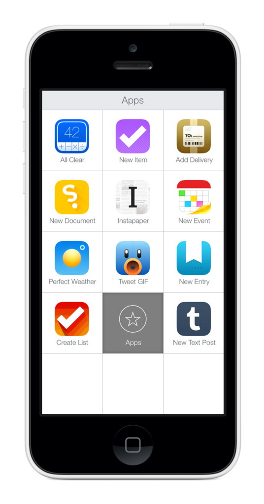

Like Katie Floyd , I have had a lot of trouble integrating LaunchCenter Pro (als…

Like Katie Floyd, I have had a lot of trouble integrating LaunchCenter Pro (also available for iPad) into my workflow. I've known about LCP's power for a long time, but remembering to use it to tackle tasks was still a source of friction. Here's how I'm learning to use LCP. First, I identified the apps that I wanted to move to LCP. For me, this was apps like Tweetbot, Find My Friends, Reeder, and Pushpin. I put all these apps into a folder and named it LaunchCenter. (Including Pro elided the folder name.) Next, I made this folder annoying to get to. I moved it off to the last screen of my iPhone where I relegate my folder of unused apps like Notes and Reminders. The goal with this is to make manually digging up the app I want to launch from LCP as painful as possible. As an Alfred user, I'm also used to launching apps via the keyboard. With iOS 7 making Spotlight search available from any Springboard screen, this has become a frequent use for me. This is where the folder name comes into play. When I swipe my home screen down and type "twe", I see Tweetbot. What I also see is the name of the folder where this app lives (LaunchCenter) and this reminds me that I mean to launch this app from there. So, I force myself to leave Spotlight and open Tweetbot from LCP. The final piece of this puzzle is making LaunchCenter Pro itself easy to get to. For me, this meant just putting it into my dock. This is available on every home screen and seeing it all the time reminds me that I intend to use it more. So far, I've worked adjusted my workflow for things like launching Podcasts and Reeder. Some apps I haven't transitioned fully yet and I think these are mostly my most used apps (Tweetbot is always within a few apps in the switcher.) and apps I interact with primarily through notifications. But, I find myself launching LCP a lot more often and that's really the first step to making it a habit.